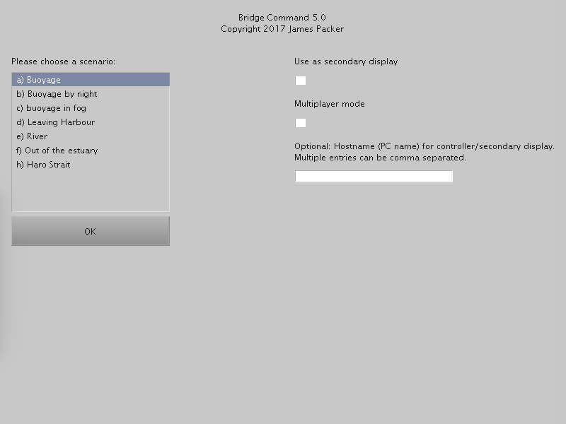
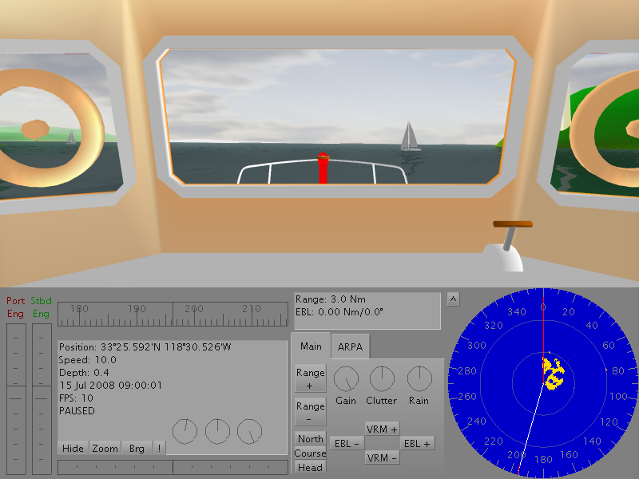
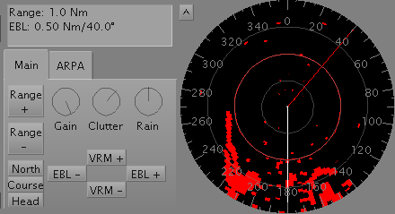
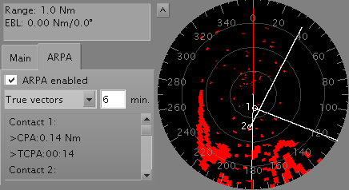
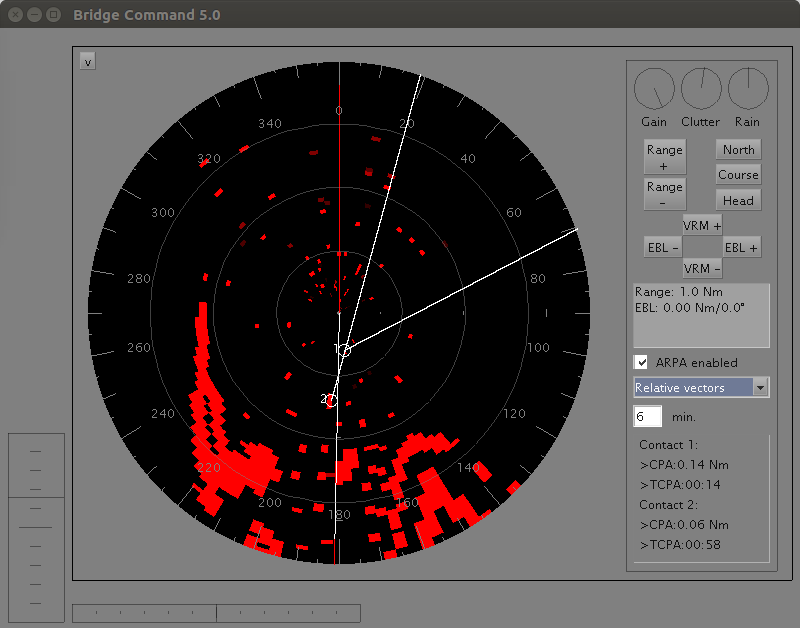
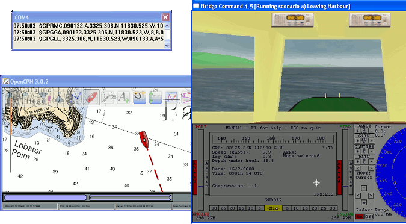
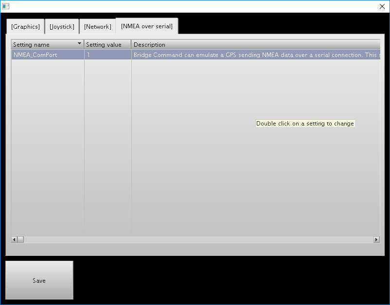
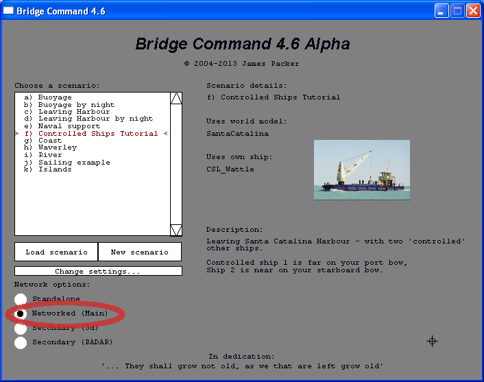
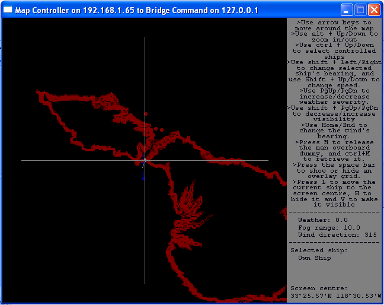

These tutorials will take you through the use of Bridge Command in stages. They will start with the basics, and progress onto the more advanced features. The tutorials get more advanced, so it will be helpful to work through them in order.
This tutorial will cover the basics of using Bridge Command, including how to use the interface, and some of Bridge Command's concepts.
Start the Bridge Command launcher, and click on the top button to start Bridge Command, the main simulator program. Other options include 'Scenario Editor', to create new scenarios as described in Scenario Writer, and at the bottom are the buttons to change the programs' settings. When Bridge Command has loaded, you will see a screen similar to the one below, where you can select which scenario you want to load.
You can select a scenario by clicking on the scenario name, or with the arrow keys. Bridge Command uses scenarios to set up each simulation. The scenario sets up where your ship starts, where the other ships around you start and how they behave. It also sets up the initial weather and time in the simulation.
The 'hostname' box is used to set up interactive exercises, as described in tutorial 4, or multi-screen panoramic views, as described in tutorial 5. For this tutorial you do not need to change the 'secondary display', 'multiplayer' or hostname boxes.
Choose the 'Leaving Harbour' scenario with your arrow keys or mouse, and select it by pressing enter, or clicking the 'OK' button.
In this tutorial, we will just cover the basics of the Bridge Command interface, leaving details to further tutorials..
Bridge Command starts paused, and the scenario can be started by pressing the button on screen or pressing 'enter'. Before you do this, take some time to look around the interface. If you want to pause the simulation at any point, press the '0' key on your keyboard.
Bridge Command uses keyboard keys for most of the 'simulator' interaction, and the mouse for controlling your ship. In addition, you can use physical throttles and a wheel to control your ship. This is covered in the Controls documentation.
The arrow keys on the keyboard allow you to look around the simulation. Try this, and then try the arrow keys while holding down the 'Ctrl' key. You will see that this jumps to preset views (ahead, port, starboard, astern). Now try pressing the space bar. This will move you between the available viewpoints on your ship.
Having had a look around, and got a feel for the viewing controls, we'll now continue with the simulation, and learn how to use the rudder.
Press the '1' (Number 1) key at the top left of your keyboard, or the 'enter' key to resume the simulation from its paused state. Move your mouse over the rudder bar (at the bottom left of the screen), and click. You will see the indicator line move, showing your current rudder position, with 30 degrees of port rudder on the left through to 30 degrees of starboard rudder on the right.
Using your rudder, make your way out of the harbour, aiming to pass around the stern of both sailing boats.
When you are out and in clear water, we will learn how to use the engine controls. At the left of the screen, under the 'Port Eng' and 'Stbd Eng' labels you will see two rectangular areas. These are your engine controls. Click in the area and move your mouse up and down. This will change your engines, and your ship will respond. If you want to change your engine from ahead to astern, click in the lower half of the relevant engine controller. With the engine controls, using the right mouse button will control both engines together, which can be useful for changing speed. Using the left mouse button will just control the engine you have selected.
To practice using your engines and rudder together, try coming alongside the submarine, stopped to the west of the harbour.
In order to find the submarine, it may be useful to use the 'binoculars' mode, which gives a magnified view. To switch to this view, press the zoom button at the bottom left. To go back to the normal view, press the button again. If you want to take a visual bearing, click the 'Brg' button, and move the view with your arrow keys.
To get a full screen 3d view, press the 'Hide' button. All of the interface except the view, engine and rudder controls will be hidden.
You will also see a set of readings at the bottom centre of your screen, giving you information such as the depth sounder reading and current speed. In addition to the real-time and paused states already used, you can run with compressed time. You can do this by pressing the number keys at the top of your keyboard, from 2 for 2:1 time compression, 3 for 5:1, 4 for 15:1, 5 for 30:1 and to 6 for 60:1.
Move your mouse pointer to the area above the rudder control, with three dials. If you click on any dial, you can turn this with your mouse. This will set the weather, rain intensity and visibility.
If you want to carry out a man overboard drill, Bridge Command has a man overboard dummy. To release this, press the 'm' key on your keyboard. When you have completed your manoeuvre, you can retrieve the dummy by holding down the 'Ctrl' key and pressing 'm' again.
To end the simulation, and quit Bridge Command, press the 'Esc' key, at the top left of your keyboard. When prompted, then press the 'Enter' key to confirm you want to quit, or click 'Ok'.
This tutorial has run through the basics of using Bridge Command. You should now be able to use Bridge Command in standalone mode, and practice your ship handling skills with simple scenarios.
Start Bridge Command as described in Tutorial 1. When Bridge Command has started, in the lower right of the screen you will see the radar display. Bridge Command simulates a scanning radar, with 'north up', 'head up' and 'course up' modes.
To change the radar displayed range, you can zoom in or out by clicking on the 'Range +' and 'Range -' buttons, until you reach the range limits. The radar gain and clutter reduction is controlled in a similar way by clicking on the the dials labelled 'Gain', 'Clutter' and 'Rain' (for rain clutter reduction).
The radar starts in North up mode. In order to switch to 'Head up' or 'Course up' modes, click the buttons at the bottom left of the radar.
To find the range to an echo on screen, use the 'VRM +' and 'VRM -' buttons to change the range of the displayed variable range marker. The range is displayed in the radar data box. This can be used in conjunction with visual fixes, or by finding three radar ranges, to fix your ship's position.
With the electronic bearing line, you can set up a line plotted on the radar screen at the bearing you require. To change the EBL bearing, Click the 'EBL +' and 'EBL -' buttons to change the bearing. Again the angle is displayed in the radar data box.
ARPA is an automatic aid for collision avoidance based on the radar. It tracks contacts on the radar screen, in order to find their relative motion. This allows the closest point of approach and time to this closest point of approach to be estimated. In addition, the system can estimate the contact's true course and speed over the ground.
The simulator does not yet meet all of the requirements of the IMO (International Maritime Organisation) for a full ARPA set.
Change to the 'ARPA' tab, to enable ARPA and to see the details of tracked contacts. After ARPA has been enabled, tracking will start. After a period of time to acquire and track contacts, they will be displayed on screen, and the details listed. The ARPA vector controls set how the ARPA vectors are plotted on screen, as true or relative motion, and the vector length displayed in minutes.
To hide the 3d view and show a large radar display, click on the '^' button to the left of the radar screen. This retains the rudder and engine controls, but hides everything else.
This tutorial has covered how to use and interact with the simulated radar in Bridge Command. It has also introduced the ARPA facilities.
Bridge Command can be set up to emulate a GPS, which allows it to be connected to a software or hardware chart plotter, to practise electronic navigation.
To do this, you will need a serial or ethernet data connection between your computer running Bridge Command and your chart plotter.
You can use a chart plotter on the same computer or another computer connected on the same network. Bridge Command sends ethernet (UDP) NMEA data by default to port 10110, and by default to 'localhost', i.e. the same computer. If you want to use the chart plotter on another computer on the network, find the plotter computer's hostname (starting Bridge Command in secondary mode on the plotter computer will show this, or you can find the name by typing 'hostname' at a command prompt.) Your chart plotter will need to have settings to enable NMEA input over UDP, and to set the port number. Start the Bridge Command settings editor, and switch to the NMEA tab, and set the 'NMEA_UDPAddress' setting to match the hostname of the plotter computer, and ensure the 'NMEA_UDPPort' setting matches the port expected by the plotter.
The chart plotter could either be a dedicated chart plotter with an RS422 NMEA data input, or another computer running chart plotting software. If your computers have serial ports, all that you will need is a 'null modem cable' to connect them up. However, modern computers don't come with serial ports, so you have two options. The simplest option is to get a USB to serial adapter for each computer, and a null modem cable to connect the simulator to the chart plotter. Alternatively, you can create a 'virtual com port' on each computer, and connect these across the network, using com0com and com2tcp. This is likely to be more complex to set up, but will not need any new hardware.
Once you have got your computer and chart plotter connected physically or virtually, you can test this by enabling Bridge Command's GPS emulation. To do this, you will need to know the com port number for the computer you are running Bridge Command on. If it is a physical serial port, this is likely to be 1, and if it is a virtual port, the software you used to set it up should show you the port number.
To enable the GPS emulation, start the Bridge Command launcher, and click on 'Settings: Main'. In the settings editor, find the 'NMEA' tab, and change the selection to the number of the com port you are using (double click anywhere in the 'NMEA_ComPort' row, type the number, and press enter). For example, if you are using the serial port COM1 on your Bridge Command computer, change this to 1. When you have made your change, click on 'Save' to confirm.
You can now start Bridge Command again. When it starts a scenario, it will now be sending NMEA data to the chart plotter emulating a GPS. The picture above shows Bridge Command 4.7 running with OpenCPN, an open source chart plotter available from their website.
As setting this up will be very dependent on the hardware and software you have, it isn't possible to give detailed instructions for all possibilities, but if you have any questions about setting this up, please ask on the forum (bridgecommand.co.uk/forum).
In the first tutorial, you interacted with other vessels, which had their movements pre-programmed in the scenario. Although these movements can be highly complex, with many legs with different courses and speeds, they are fundamentally inflexible, as the vessel's movements will be exactly the same each time the scenario is run.
In order to allow interactive scenarios, Bridge Command allows the other ships' course legs to be modified in real time as the scenario develops. The course and speed of any current or future leg can be changed, as well as allowing the controller to move ships and change the weather.
In order to allow this to work, two computers are needed, connected by a network. Although in theory any two computers connected to the internet will work, the two computers will probably need to be connected to the same local network. This will include any computers connected to the same wired or wireless router.
Interactive exercises are run with Bridge Command running on one computer, and a second program, called the 'Map Controller' on the second computer. In order to set up the interactive simulation, you will need to know the computer name (hostname) or IP address of both computers. A hostname or IP address is the way a computer identifies itself to other computers on a network, so will be unique for each computer on the network.
On the controller computer, start the Bridge Command launcher and click 'Map Controller'. You will see a screen come up that asks you to start the Bridge Command session, and tells you the hostname of the computer
Once the controller has started, you should now start Bridge Command.
On the simulator computer, start Bridge Command as normal, and choose the scenario 'a) Buoyage'. In the hostname box, type the computer name or IP address for the other computer (As shown in the Map Controller window).

When Bridge Command has started, the Map Controller will load up a map of the world area chosen. If both Bridge Command and the Map Controller have completed loading, you should see a screen like this:
If the screen is blank, and asks you to start the Bridge Command session, it is likely that the messages sent from Bridge Command to the Map Controller over the network are getting blocked. Double check the computer name or IP address, and that you typed it in correctly. If this is right, and you still can't get contact, check your firewall settings - Bridge Command uses UDP on port 18304 by default. Check that this isn't being blocked, either by your computer or your router.
With the simulation still paused in Bridge Command, we'll explore the map controller. First, try moving around the map by clicking and dragging the map.
You'll notice a number of contacts drawn on the map. The single red contact is the 'Own ship,' the main ship in the simulation. You should also see three blue contacts. These are the 'Other Ships,' which are the ships we can control from this program. Two of have white lines showing their pre-programmed movements as set in the scenario, and which can be changed by the controller as the scenario progresses. The third one is stationary, so no legs are shown.
Now we'll select one of the controlled ships, and run through how they can be controlled. In the lower left of the screen, you'll see a drop down box to 'Select ship'. Initially this will be 'Own Ship.' Use the drop down box to select 'Other Ship 1'. You will see the course legs for this ship (actually the sailing yacht in this scenario) appear. You will see that the first leg is marked as 'Current', with the later legs marked as 'Future'.
We'll now control the movement of this ship. In the 'Select leg' box to the right, click on leg '1 (Current)', and you should see the leg's course, speed and distance appear below. Try clicking on the course (initially 110), and change this to 90, and then click the 'Change leg' button below. After a short pause, you should see the leg change in the display. (The pause is because the map displays the information from Bridge Command, so it only updates once Bridge Command has received the change and sent back the updated course information).
You can change the speed and leg distance in the same way. Note that if you change the current leg distance, this distance will start when you click 'Change Leg', and is not the distance from the original start of the leg. You can change any current or future leg. Previous legs will remain in the list, but cannot be changed.
In order to set up, or reset a simulation, it may be useful to re-locate the 'Own ship' or 'Other ships'. In order to do this, select the ship you want with the drop down box and the up/down arrow keys, and move the map so the centre is where you want the ship to move to, and then press the 'Move Ship' button at the bottom of the screen. This will move the ship to this location.
You can also set the weather and visibility from the controller, using the three scroll bars on the control window. Hovering over these bars will show what each one does. The left bar controls the visibility, the middle one the rain, and the right bar controls the weather.
When you have finished, exit both Bridge Command and the Map Controller by pressing the 'Esc' key on each computer's keyboard.
With the Map Controller, Bridge Command can be a powerful tool for running interactive exercises, which can be made as simple or complicated as the task requires.
In order to provide a fully immersive simulation environment, it is possible to run the simulation across multiple screens, so anything up to a full 360° view can be shown. This would allow a full ship's bridge to be created, with Bridge Command simulating the entire environment around the ship, which could be projected onto screens surrounding the bridge. Or at a simpler level, three screens on a desk can give a 270° view from your simulated ship to give a fuller simulation realism. Each screen displays a 90° viewing angle by default, but this can be changed to suit your configuration of screens (see 'Configuration' below).
To run with multiple screens, one Bridge Command session is needed per screen, and this can either be on one computer, or multiple computers. For multiple computers, these must be on a network, just as in the interactive exercise tutorial.
One session will be used to run Bridge Command in the normal way, and we will refer to this as the master. The other sessions will show the secondary displays. With the settings editor, check that the graphics mode is '3', which is a borderless window. This is required as a conventional full screen set up does not work with multiple monitors. If you want to change from the default 90° view angle, you can also change this ('view_angle' in the settings editor).
Start Bridge Command, and you should see a small popup window. Drag this to where you want your first Bridge Command session to be, and click OK. Instead of choosing a scenario, click the the 'Use as secondary display' option instead of choosing a scenario, and click OK. Repeat this for all except one monitor, which you will use for the master session.
For the master session, start Bridge Command in the same way, but in the 'hostname' box, type Localhost,localhost (if you have two secondary displays). Then select a scenario, and click OK. After a brief pause, you should see the scenario appear on all screens. Change the view on the secondary screens with 'Shift' and left/right arrow keys to step around the view. If you don't see anything happen, check your firewall settings, as Bridge Command uses local network communication between the sessions.
Start Bridge Command on all of the secondary display computers first, clicking the 'Use as secondary display' option instead of choosing a scenario. Make a note of the hostname and port of all of the computers you will be using for secondary displays, as shown in the secondary startup screen.
When you have done this, start Bridge Command on the master computer. Select a scenario as normal, but instead of just entering one hostname (as in an 'interactive exercise'), enter the hostnames of all of the secondary displays, separated by commas (','). Note that you can also run the map controller at the same time on another computer. If you do so, just add the hostname of the controller computer to the list of hostnames you type in. If any of the port numbers are different from the default of 18304, you can set this by typing 'hostname:port'
As an example, if you have four other computers on the that you will be using, with hostnames secondary1, secondary2, secondary3 and controllerPC you would enter secondary1,secondary2,secondary3,controllerPC. The order of the names is not significant.
Now set the viewpoints you want in each window, and run the simulation exactly as before. To change the viewpoints on the secondary displays, use Shift + space bar, which will allow you to change the viewpoint independently. To return to a linked viewpoint, use the space bar on its own. You can also use the 'Hide'/'Show' buttons to switch between a full screen 3d view, and a view that aligns with the main simulator display. The full screen radar view is also available as normal.
For each secondary display, the Settings Editor can be used to set the angle of view (to match your screen set up), and the initial direction of the view (parameters view_angle and look_angle). To change the view in steps in Bridge Command (for example if you are using multiple displays on one computer), use 'Shift' with the left and right arrow keys to change the view.